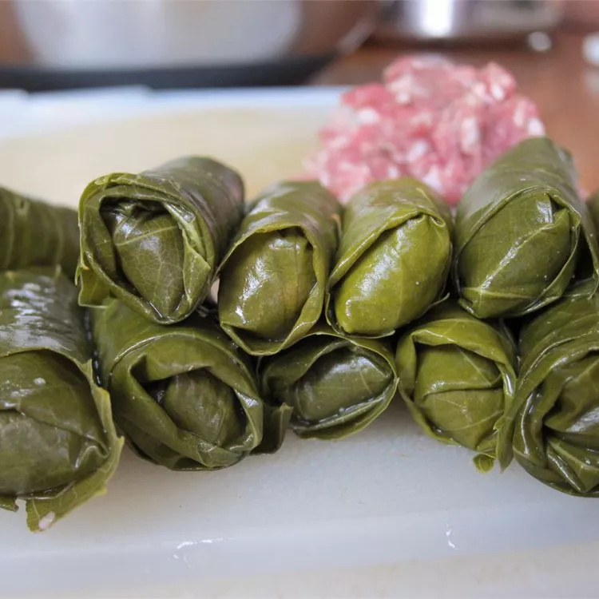

Home
Grape Leaves Aleppo

Description
his is a traditional recipe for delicious stuffed grape leaves, known as "yeb'r't" in Arabic.
The recipe has a rich history, having been passed down from the user's grandmother who brought
it from Aleppo, Syria, to the U.S. in 1912.
Ingredients
- 1 cup uncooked white rice
- 2 pounds ground lamb
- 1 tablespoon ground allspice
- 1 teaspoon salt
- 1 teaspoon ground black pepper
- 2 (16 ounce) jars grape leaves, drained and rinsed
- 6 cloves garlic, sliced
- 1 cup lemon juice
- 2 kalamata olives (Optional)
Steps
- GSoak rice in cold water, and drain. Mix together ground lamb, rice, allspice, salt, and pepper in a large bowl until well blended. Place about 1 tablespoon of the meat mixture onto the center of each grape leaf. Fold leaf over once, turn in the edges on each side, and then roll the leaf closed.
- Stack leaf rolls in a large pot, covering each layer with slices of garlic. Add just enough water to cover rolls, then pour in lemon juice. Add olives to the pot for flavoring. Place a plate on top of the rolls to keep them under the water.
- Bring to a boil, then reduce heat, cover and simmer for 1 hour 15 minutes. Taste rice for doneness. Grape leaves taste even better after sitting for several hours. Serve and enjoy.